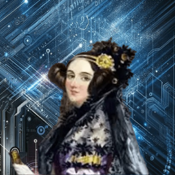
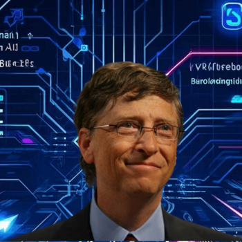
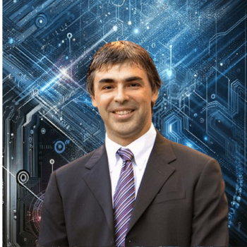
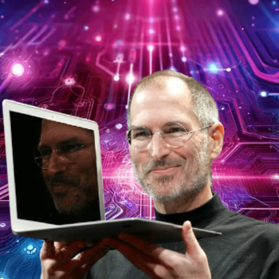
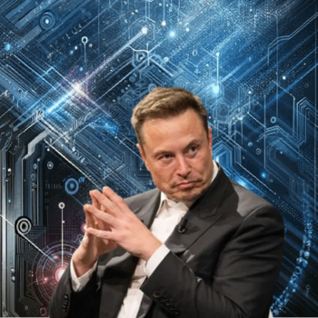

-
Ada Lovelace
Descrição
Augusta Ada Byron King, atualmente conhecida como Ada Lovelace, nasceu em 10 de Dezembro de 1815, em Londres na Inglaterra. Ada foi uma matemática e escritora, responsável por escrever aquele que veio a ser conhecido como o primeiro algoritmo de computador da história.
-
Bill Gates
Descrição
Fundou a Microsoft em 1975, então com 19 anos, em parceria com Paul Allen. O primeiro produto comercial da empresa foi o Altair BASIC para o MITS Altair (Micro Instrumentation Tlemetry System), produzido no mesmo ano. Em 1980 a empresa deu um passo decisivo ao adquirir da Seattle Computer Products o sistema operativo 86-DOS.
-
Larry Page
Descrição
É filho de um cientista da computação da Universidade Estadual de Michigan, Dr. Carl Victor Page, e de Gloria Page. Sua paixão por computadores começou cedo, aos seis anos. Desde então todos seus estudos foram direcionados a essa área. Frequentou a East Lansing High School, e seguindo os passos do pai, se formou na Universidade de Michigan em Engenharia da Computação. Durante seu doutorado na Universidade de Stanford juntou-se a Sergey Brin, e juntos desenvolveram e fundaram o Google em 1998 deixando a Universidade de Stanford.
-
Steven Jobs
Descrição
Foi um inventor, empresário e magnata americano no setor da informática. Notabilizou-se como cofundador, presidente e diretor executivo da Apple Inc. e por revolucionar seis indústrias: computadores pessoais, filmes de animação, música, telefones, tablets e publicações digitais. Além de sua ligação com a Apple, foi diretor executivo da empresa de animação por computação gráfica Pixar e acionista individual máximo da The Walt Disney Company
-
Jeffrey Bezos
Descrição
Fundador e ex presidente e CEO da Amazon, A empresa começou com o comércio de livros e expandiu para uma grande variedade de produtos e serviços, e mais recentemente começou a investir em transmissões de vídeo e áudio. Atualmente, é a maior empresa online de vendas do mundo, bem como o maior fornecedor mundial de serviços de infraestrutura em nuvem através do seu braço Amazon Web Services.
-
Elon Musk
Descrição
Ele é o fundador, diretor executivo e diretor técnico da SpaceX; CEO da Tesla, Inc.; vice-presidente da OpenAI, fundador e CEO da Neuralink; cofundador, presidente da SolarCity e proprietário do Twitter desde 2023.